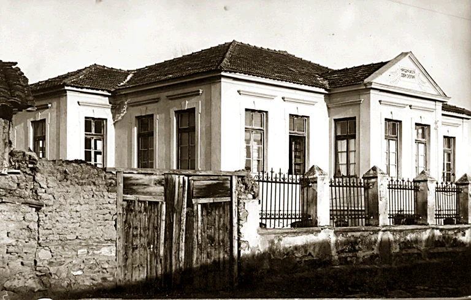
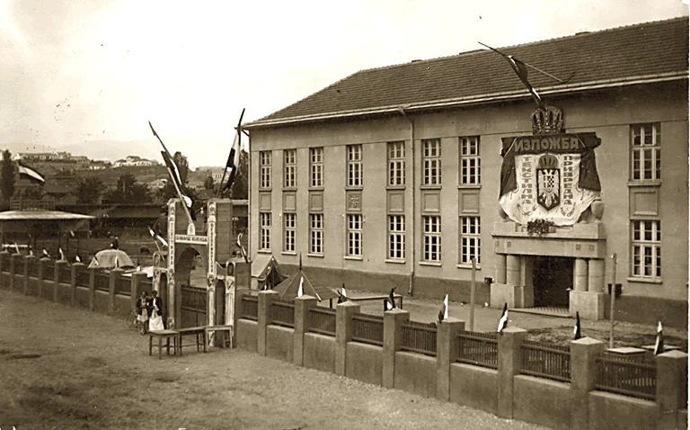

Fakulteti Filozofik
- Realizimi
- Kole Čašule, Blagoja Drnkov
- Viti
- 1947
- Kohëzgjatja
- 00:04

Shkolla e mesme Idadija, ndërtuar nga fundi i shekullit XIX. Mësimi zgjaste tetë vjet dhe mund ta ndiqnin nxënës të të gjitha besimeve. Më vonë ndërtesa u bë Shkolla e mësuesisë, deri në tërmetin e vitit 1963, që e dëmtoi rëndë. Për këtë arsye më 1965 u shemb, dhe si kujtim u la hyrja me katër kolonat. Edhe sot shkupjanët e quajnë këtë zonë Idadija. Në sfond është shkolla e arteve dhe zejeve.

Shkolla e mësuesisë (vitet 1920)

Pjesë e parkut të qytetit me ndërtesën e shkollës së zejeve. (vitet 1920)

Ndërtesa e shkollës së mesme Idadija, pas Luftës së Dytë Botërore "Shkolla e mësuesisë", e shkatërruar në tërmetin katastrofik të 26 korrikut 1963.

Shkolla e Arteve dhe Zejeve, ndërtuar nga fundi i shekullit XIX, pranë shkollës së mësuesisë. U dëmtua rëndë në tërmetin e vitit 1963 dhe për këtë arsye u shemb.

Universiteti i Shkupit në vitin 1920 në kejin e Vardarit. Në të ishte vendosur Fakulteti Filozofik, si pjesë e Universitetit të Beogradit.

Universiteti i Shkupit në vitin 1920 në kejin e Vardarit. Në të ishte vendosur Fakulteti Filozofik, si pjesë e Universitetit të Beogradit.

Ndërtesa e oborrit të gjimnazit të djemve. (1912)

Gjimnazi i djemve në Shkup, ndërtuar më 1902-04, me elemente neoklasike. Në plan të parë është rruga "Poincaré", më vonë "Leningradska".

Gjimnazi i djemve, ndërtuar më 1902.

Medreseja e madhe në rrugën Ilindenska (vitet 1920)

Shkolla fillore "Shën Mëria" - vitet 1920.

Shkolla fillore "Jovan Skerlić" - vitet 1920.

Shkolla e tretë fillore popullore (vitet 1920)

Shkolla fillore serbo-hebraike në lagjen hebreje.
(fundi i shekullit XIX)

Shkolla fillore "Đura Jakšić" (vitet 1920)

Shkolla fillore popullore "Mbretëresha Maria" - vitet 1920.

Shkolla fillore "Car Dušan", pranë ndërtesës Macura në sheshin e qytetit - vitet 1920.
Shkolla fillore "Car Dušan", pranë ndërtesës Macura në sheshin e qytetit - vitet 1920.

Shkolla fillore "Branko Radičević" - vitet 1920.

Shkolla popullore "Ljuba Kovačević" - vitet 1920.

Shkolla popullore "Vladimir Karić" - vitet 1920.

Shkolla popullore "Dositej Obradović", në lagjen Sauk Çeshme - Çair - vitet 1920.

Shkolla fillore "Vuk Stefan Karadžić" - vitet 1920.

Shkolla popullore "Mehmed Sokolović" - vitet 1920.

Shkolla popullore "Osman Džikić" - vitet 1920.

Akademia Tregtare - vitet 1920.

Akademia Tregtare - vitet 1920.

Oborri i gjimnazit të djemve - vitet 1920.

Ndërtesa e re e shkollës fillore "Dositej Obradović", ndërtuar në vitet 1930.

Shkolla fillore "Goce Delčev". (fotografuar më 1934)

Shkolla fillore "Goce Delčev". (fotografuar rreth vitit 1950)

Gjimnazi i vajzave - natën. Në plan të parë është monumenti i çlirimtarëve të Shkupit. (rreth viteve 1950)

Gjimnazi i vajzave, ndërtuar në vitet 1930; fotografia është nga vitet 1950. Para ndërtesës është monumenti "Çlirimtarët e Shkupit"

Fakulteti i Shkencave Natyrore - vitet 1950

Shkolla fillore "11 Tetori" - vitet 1960

Fakulteti Teknik - vitet 1960

Revista filmike nr. 10
 Ujësjellësi4 kartolina
Ujësjellësi4 kartolina Kalaja30 kartolina
Kalaja30 kartolina Urat60 kartolina
Urat60 kartolina Kej58 kartolina
Kej58 kartolina Sheshi46 kartolina
Sheshi46 kartolina Ndërtesat66 kartolina
Ndërtesat66 kartolina Kishat e krishtera19 kartolina
Kishat e krishtera19 kartolina Objektet myslimane33 kartolina
Objektet myslimane33 kartolina Shtëpia e Oficerëve29 kartolina
Shtëpia e Oficerëve29 kartolina Teatri28 kartolina
Teatri28 kartolina Stacioni hekurudhor13 kartolina
Stacioni hekurudhor13 kartolina Shkollat36 kartolina
Shkollat36 kartolina Parqet12 kartolina
Parqet12 kartolina Tregjet18 kartolina
Tregjet18 kartolina Rrugët38 kartolina
Rrugët38 kartolina Panorama I60 kartolina
Panorama I60 kartolina Panorama II30 kartolina
Panorama II30 kartolina Kolazhe55 kartolina
Kolazhe55 kartolina Përmbytjet9 kartolina
Përmbytjet9 kartolina Tërmeti27 kartolina
Tërmeti27 kartolina Shkupi 200026 kartolina
Shkupi 200026 kartolina